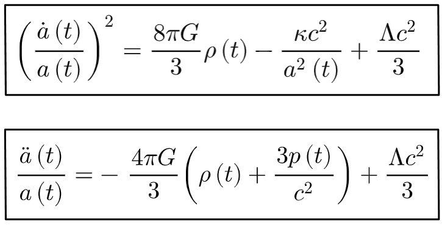

Abstract
This article explores the presence of Pi in the universe, demonstrating it as more then just a constant in mathematics but a bridge between geometry and the whole universe, from Buffons needle problem, where Pi connect seemingly randomness to probability, to Pis emergance in the friedmann equations which describe the universe expansion and can be used to calculate its age, Pi is also critical to black hole equations like the Schwarzschild radius, demonstrating its importance in the fabric of spacetime, all of this shows how mathematics is deeply rooted in the universe, not invented but discovered.
Presentation:
Circles to Nature:
Why this subject is so interesting is perfectly described by that ‘our physical world doesn't only have some mathematical properties but only mathematical properties.’ (Science Documentary, 2016) Pi is a great example of the freaky ways math works in nature as ‘The number Pi turns up in many other areas of mathematics, often having no obvious connection to circles, there is always an indirect connection’ (Steward, 2015) for example through ‘Buffon’s needle problem, π unexpectedly connects geometry with probability, revealing a profound link between randomness and the most deterministic of mathematical constants.’ (Steward, 2015) in this experiment the probability that ‘it falls onto one of lines is exactly 2/Pi, or roughly 64%, meaning if you dropped the needle thousands of times theoretically you could calculate Pi even though there are no circles’ (Science Documentary, 2016) When calculating this, Pi emerges naturally because of the calculations involving Sin(x), leading to the result where the probability is proportional to 2/Pi
Circles to cosmos
But pi is not only found in probability, ‘Pi is intimately related to the structure of space itself. Even in the most curved or complex geometries, the ratio of a circle's circumference to its diameter eventually boils down to π in flat space.’ (Grime, 2013) When evaluating the large-scale structure of the universe, π appears in the Friedmann equations as built in features that describe the expansion of the universe. These metrics and the equations that utilize them are based off the geometry of the universe that is described with the Robertson-Walker metric. These metrics are spherical or hyperbolic depending if the universe is closed, flat or open hence the use of Pi. These equations are important as they help us predict and give us ‘a good insight into eras of our universe’s history, the age of our universe and so on. We’ll also consider the interesting question of how our universe might end as well (at least how the Friedmann equations would predict) as well as how different types of universes will end.’ (Hirvonen, n.d.) The different types referring to different curvatures being flat, closed and open. The graph below shows these 3 graphed plus one with a dark matter constant and a cosmological constant. By using the cosmic microwave background, supernovae graphs, and the large scale structures statistics, one can say that the universe is almost flat as its curvature is close to 1 but has an accelerated expansion rate, which is caused by the dark energy. This suggests a flat geometry with an infinite extent but complicated dynamics. Which is fitting because not only does the Friedmann equations relate to Pi but so does cosmic microwave background as well ‘a snapshot of the early universe, shows patterns that depend on the spherical harmonics equations. These equations inherently contain π because they describe vibrations on spherical surfaces.’ (Tegmark, 2014)
These equations are important to us as space lovers as they can be used to help answer important questions like how old is our universe? ‘Do the Friedmann equations give us an answer to this? They do indeed! We can use experimental observations to aid us in this calculation.’ (Hirvonen, n.d.) ‘This means that we can rearrange the above equation to solve for t, the age of the universe. Doing this and plugging in the experimental values mentioned gives us the age of our universe: 13.7 Billion years’ (Hirvonen, n.d.)
It is both interesting and weird that pi appears on the Friedmann equations with the added function of being able to ascertain precisely the age of the universe. Pi is a geometric constant representing circles, and it appears in such an abstract context as the cosmological evolution of the universe. The equations determine the expansion of the universe based on the principles of general relativity by Einstein and spacetime geometry. Precise, thanks to the spherical architecture of the universal large-scale structure, pi comes from both the volume and surface areas of spheres used in mass energy and curvature calculations. The same mathematical constant, which enables one to measure the circumference of a circle and study oscillatory systems such as pendulums and springs, also enables one to imagine the birth, evolution, and end of the entire universe. It is really touching "how a concept as 'human' as π, originating from measuring circles, has a central role in understanding something as vast and universal as spacetime" (Carol, 2024). This branching connection, linking geometry's smallest figures to the universe's vastness, highlights the global nature of mathematics in a straightforward yet marvelous way.
So if pi is so seemingly important in our universe, where did it come from, and how was it discovered? At its core, 'pi represents the ratio of a circle’s circumference to its diameter' (MathAware AI, 2023). 'You will get approximately 3.14—no matter what size circle you draw! A larger circle will have a larger circumference and radius, but the ratio will always be the same. If measured and divided perfectly, you would get 3.1415926..., or pi' (Bogart, 1999). This leads to the question of whether math is entirely in our heads or a real phenomenon we discovered, as it resonates with the core of existence. Pi arises naturally in phenomena across the universe: in Buffon’s needle experiment, when introducing probabilities to geometry; in cosmology, where the Friedmann equations describe the universe's expansion and estimate its age; and even in black hole equations, like the Schwarzschild radius, which determines spacetime's geometric configurations. These examples show that mathematics is deeply intertwined with the physical universe.
Conclusion
While Pi is a human ‘invention,’ its standout place in all aspects of life whether it be found in nature, making something like the Buffon’s needle problem, which seems completely random, into something of probability, or how it is found in core physics, as it is used in the Friedmann equations to model the expansion of the universe. Pi, which seems to be a seemingly random number in these situations, makes us ask: Why is there a number we think we invented by working out the ratio of a circle’s circumference to its diameter? This is why we can conclude that mathematics is an entirely real thing. This number, in these situations, has nothing on face value to do with it, yet it fits perfectly, showing that it is something to be discovered, not invented.